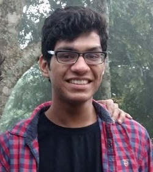

|  | Vikas JainFinal Year Undergraduate Computer Science and Engineering Indian Institute of Technology Kanpur Email: vikasj@iitk.ac.in | vksjn18@gmail.com |
My Hacks - GitHub
Click here to see my full cv.
Interests: Machine Learning, Computer Vision, Deep Learning and Reinforcement Learning.